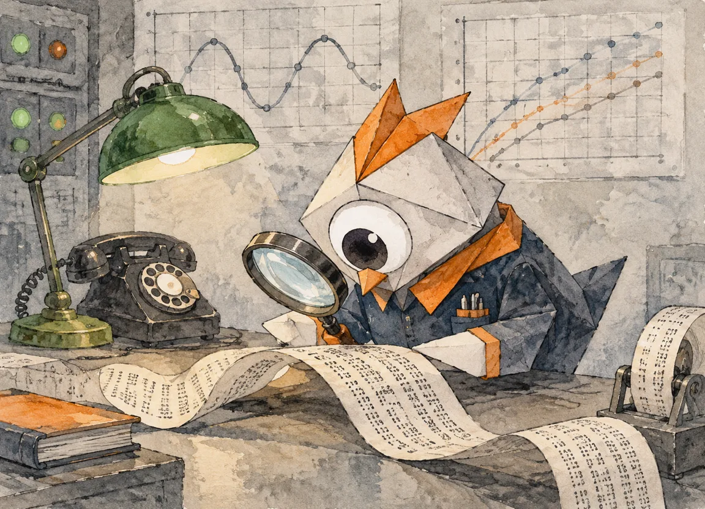
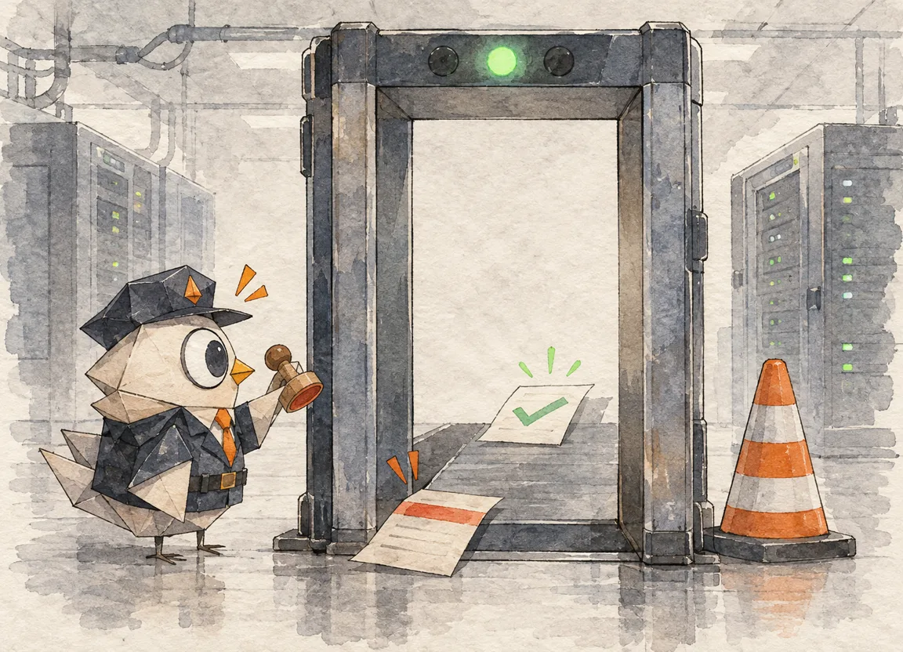

00:00
规则决定事实，AI 负责说话
整个系统最重要的一次分工：确定性引擎先跑完所有判断，大模型才被允许开口——而且只有叙事权
市面上「AI 监控」的典型做法，是把指标喂给大模型，让它判断「服务器是否健康」。这台 Agent 的规则引擎模块在第一行注释里就把这条路堵死了（rules.py 原文）：
AI narrates and deep-dives, rules decide facts.
确定性规则引擎，先于任何大模型运行。AI 负责叙事与深挖，事实由规则决定。
这不是对 AI 的不信任表演，而是一次严格的职责切分。把整条巡检流水线摊开看，每一环的「决定权」归属清清楚楚：
FIG. 01 · 巡检流水线与决定权归属——每一环都标着「谁说了算」
SSH 跑只读命令解析指标（df/ps/docker/证书/登录），或 mock 双轨。决定权：命令与解析器。
阈值比对产出 findings + 健康分。决定权：规则引擎——全系统唯一的事实来源。
五类主动拨测独立成域，失败只落事件不进 findings。决定权：状态机。
真实执行只读探针命令拿证据，组装根因卡。决定权：证据（命令输出）。
AI 把证据讲成人话，挂在卡片侧栏。决定权：无——附加视角，永不覆盖 root_cause。
白名单命令，批准与执行分离。决定权：人 + 白名单正则。
findings：事实的最小单元
规则引擎的产出物叫 finding——一条结构化事实：{type, severity, title, detail, evidence}。磁盘、内存、CPU、load、IO 写入、温度、swap、failed 服务、可疑登录、容器退出、证书临期，每类各有判据。看真实代码（rules.py · evaluate()，有删节）：
if disk >= T["disk_crit"] or ("disk" in active and disk >= C["disk"]): add("disk", "crit" if disk >= T["disk_crit"] else "warn", f"磁盘使用率 {disk:.0f}%", f"Disk usage {disk:.0f}%", "磁盘即将写满，有写入失败风险" if disk >= T["disk_crit"] else f"超过 {T['disk_warn']:.0f}% 警戒线", ..., {"disk": disk}) # evidence 随行：数字进事实，不进叙事
三处细节值得停。其一，evidence 随行：每条 finding 自带结构化证据（{"disk": 91.3}），后面深挖、根因、提案全从这里取数——事实和它的依据从不分离。其二，双语在生成处落定：「中文是存库事实源，EN 面板在生成处即落英文文案」——而不是展示层现翻。其三，那个 C["disk"]：告警已打开时，磁盘要回落到比告警线更低的恢复线才算解除——这是第二章的主角，先按下。
AI 的三重门
AI 在这台机器里要过三道门才说得上话：第一道，ai_outbound 开关——_llm_enabled() 查设置，默认关着，LLM 根本不出网；第二道，匿名化——主机名和 IP 先换成 RFC 5737 文档段占位符（第五章细拆）；第三道，位置——就算三样齐了，AI 的输出也只是卡片上的 ai_narration 字段，和 root_cause 并排放着，但 code 里的注释把它钉死了：
第五行那格「决定权：无」就是这个意思。不是 AI 不会说话，是说话这件事被安排在事实之后。
分工定了，接下来看规则引擎自己怎么站得住：阈值会抖、分数会砸穿，第二章讲两剂解药。
00:01
告警也会发抖
磁盘在 85% 警戒线上反复横跳，告警就跟着一惊一乍——两剂老药：滞后阈值与指数衰减
监控系统的第一号慢性病叫 flapping：指标贴着告警线抖动，告警开了关、关了开，通知轰炸比故障本身烦人。这台 Agent 的解药是从 Netdata 学来的老办法，写死在代码注释里（rules.py · L20）：
进出分开两条线
以磁盘为例：85% 触发警告，但解除不是「回到 84.9%」，而是要回落到 80% 以下。中间那 5 个点是一条缓冲带，指标在带内怎么抖都不翻转。四类主指标各有一条 clear 线（disk 80 / memory 80 / cpu 75 / load 6.0），且代码里有个贴心的联动（rules.py · clear_thresholds()）：
def clear_thresholds() -> dict: """恢复阈值 = min(用户同主阈值 - 5, 内置 clear 值)，用户调高告警线时恢复线跟随。""" t = dict(CLEAR_THRESHOLDS) T = thresholds() for k_main, k_clear in (("disk_warn", "disk"), ("mem_warn", "memory"), ("cpu_warn", "cpu"), ("load_warn", "load")): t[k_clear] = min(t[k_clear], T[k_main] - 5) return t
把告警线从 85 调到 92，恢复线自动变成 min(80, 87) = 80——用户调告警线时不会无意中把缓冲带调没。一个 min 函数，省掉一类「我调了阈值怎么告警还是乱翻」的支持问题。而 evaluate() 里恢复的判定也据此写成：磁盘告警处于打开状态时，必须 disk < C["disk"] 才放行解除。
分数的第二次防抖：0.5ⁿ 衰减
告警翻转让通知遭殃，分数堆积则让健康分遭殃——十条「磁盘 86%」的 warn 按线性叠加就是 −80 分，直接砸穿。健康分的公式（rules.py · health_score() 注释）：
权重区分发现类型的业务影响（SCORE_WEIGHTS：安全/容量重、性能/温度轻）；同类重复发现指数衰减——同型告警堆积不再无脑线性叠加砸穿分数。
| 发现类型 | crit / warn 扣分 | 业务理由 | 第 3 次同类 warn 实扣 |
|---|---|---|---|
login 可疑登录 | 30 / 12 | 安全事件最重 | 3.0 |
container 容器退出 | 24 / 8 | 可用性受损 | 2.0 |
disk / memory | 24 / 8 | 容量风险 | 2.0 |
cert 证书临期 | 18 / 8 | 有窗口期的事件 | 2.0 |
cpu / load | 10 / 4 | 性能噪声类最轻 | 1.0 |
io / temp | 6 / 3 | 信号价值最低 | 0.75 |
注意「第 3 次实扣」那列：8 × 0.25 = 2.0——同一条告警刷屏十次，边际惩罚趋近于零。分数反映的是「这台机器有几个问题」，不是「告警日志有多长」。
滞后治「翻转抖动」，衰减治「分数堆积」——两剂药都不新鲜，新鲜的是它们被当成一等公民写进注释、算给读者看。监控系统的可信度往往就藏在这种不起眼的减法里。
00:02
五种拨测与一台手写的 DNS 栈
URL / TCP / DNS / DoH / ICMP 五路主动出击，而最惊人的决定是：不引 dnspython，RFC1035 自己写
主机指标巡检回答「这台机器累不累」，回答不了「它对外的服务还活着吗」。补这个维度缺口的是拨测模块（probes.py 文件头，原文）：
URL（GET）· TCP（host:port）· DNS（解析器 + 期望应答）· DoH（RFC 8484，Kuma 没有的差异化项）· ICMP（均零特权零依赖）。
一台不引库的 DNS 栈
五类拨测里最显手艺的是 DNS。市面做法是 pip install dnspython，这台 Agent 的选择是把协议自己写一遍——查询构造、压缩指针解析、RDATA 展开共百来行（probes.py · L96–229）：
def _parse_name(buf: bytes, off: int) -> tuple[str, int]: """读 DNS 名称（RFC1035 压缩指针），返回 (name, 消耗结束偏移)。""" labels = [] pos, end, jumped = off, off, False while True: ln = buf[pos] if pos < len(buf) else 0 if ln == 0: if not jumped: end = pos + 1 break if ln & 0xC0: # 压缩指针 if not jumped: end = pos + 2; jumped = True pos = ((ln & 0x3F) << 8) | buf[pos + 1] continue labels.append(buf[pos + 1:pos + 1 + ln].decode("ascii", "replace")) pos += 1 + ln return ".".join(labels), end
为什么不引库？文件头没解释，但收益写在结构里：DoH 直接复用同一套线格式——doh_lookup() 把同一段 _build_query() 的报文 POST 到 https://1.1.1.1/dns-query（RFC 8484），解析走同一个 _parse_response()。一个协议，两种传输，零新依赖。还能离线测试：「纯函数，离线可测」——构造几段字节流就能单测解析器，不需要网络。
ICMP 的两个平台，两种市井智慧
ICMP ping 在两个操作系统上是两套完全不同的生存策略。Windows 直插 iphlpapi 的 IcmpSendEcho——非特权进程就能发 echo；Linux 走 SOCK_DGRAM ICMP——内核替你匹配应答，同样不用 root。而那段 ctypes 代码里埋着一行用血换来的注释：
四百字节的 argtypes 声明，换来的是「少一次深夜段错误」。这就是手写协议栈的隐性账单：省下的依赖，都要用理解力偿还——但理解力一旦付过，就变成了自己的资产。
状态机：3 败才下线，2 成才恢复
拨测结果的定性不靠单次请求——那会被一次网络抖动骗到。Gatus 式双阈值防抖（probes.py · evaluate()）：
- 连续 fail_threshold（默认 3）次失败 → down；失败计数与是否翻转无关，成功即清零。
- down 中连续 success_threshold（默认 2）次成功 → up——恢复比下线更难，防止刚翻就抖回去。
- push 型目标反向：不轮询，等上报；容忍窗口（默认 600s）过时未上报直接判死，「grace 即防抖」。
状态台账
周期 30s · 并发上限 8 · 15s 步进
域隔离：拨测不许污染健康分
最后是这个模块最清醒的一个决定，写在文件头（原文）：
想想反例：把拨测失败也按 warn 塞进健康分，那么一次 DNS 解析器抽风会把「机器本身很健康」的事实搅浑——分数从此说不清自己是什么。域隔离让主机域和服务域各自记账、各自告警，分数的语义于是稳定。这也是对 ch2 衰减公式的补充：衰减管同域堆积，隔离管跨域混淆。
DIAL_SEMA = Semaphore(8) 防一串 10s 超时目标拖住整轮；gather(return_exceptions=True) 保证单目标异常不拖垮同轮其他目标——并发纪律与 VOL.10 的「单模型重试不惊动全链」同源。00:03
深挖：证据是跑出来的
根因卡的每一个字都要有出处——「以深挖输出为准」这句话，是这台 Agent 对幻觉最硬的防御
规则引擎报出「磁盘 91%」，然后呢？大多数「智能运维」在这里让大模型自由发挥，于是根因分析里长出「可能是日志膨胀，也可能是容器写入风暴」这类漂亮的猜谜。这台 Agent 的 analyze_finding() 走了另一条路：先跑命令，后写卡片。
DEEP_DIVE：只读探针命令表
analysis.py 里有一张 DEEP_DIVE 表：每类 finding 对应一条真实执行的只读命令（du -xh /var --max-depth=2 | sort -rh | head -5 之类），命令经 SSH 在目标机上真跑，输出截 800 字进卡片。代码里那个 replace-not-format 的细节最见功力（analysis.py · L637 注释原文）：
一行注释，一次一定会踩的坑——Go 模板的花括号和 Python 的 format 占位符撞车。深挖命令的输出按步骤落进卡片的 steps 数组，每步带 {label, command, output}——证据的结构化程度和结论一样高。

根因陈述的克制
卡片上的 root_cause 从哪来？来自 _rule_root_cause()——函数注释先立规矩（原文）：
所以磁盘类根因写的是「磁盘使用率 91% 越过阈值，主要占用来源以深挖输出为准」——它明确告诉你哪些是事实（越限）、哪些还没验证（占用来源）、去哪里验证（深挖输出）。可疑登录类则精确到证据字段：「来源 IP {ip} 以用户 {user} 登录成功，不在常见内网段」。对比大模型版本的根因——「可能由异常进程导致，建议关注」——差别不在文采，在每个字是否可回查。
confidence 为什么只有两档
根因卡的置信度标注只有高/中两档，判定规则一行（analysis.py · L656）：
confidence = i18n.t("高", "High") if steps else i18n.t("中", "Medium")
跑出了深挖步骤就是「高」，只有规则事实就是「中」——没有第三档「低」，因为不存在「没证据也敢写根因」的情况。这张卡的骨架长这样：
card = {
"root_cause": root_cause, # 规则事实，不猜
"chain": chain, # 因果链（发现类型 → 预定义传导路径）
"confidence": confidence, # 有深挖=高 / 无=中
"steps": steps, # 只读探针执行轨迹 {label, command, output}
"proposal_id": proposal_id, # 修复提案（下一章：批准≠执行）
"ai_narration": ai_narration, # AI 附加视角，永不覆盖 root_cause
}注意 chain——因果链不是模型现编的，而是按发现类型预定义的传导路径（如 磁盘涨 → journal 堆积 → 写入失败风险）。哪些因果是这台系统「承认」的，全部枚举在表里；表外没有因果。
深挖给了证据，规则给了结论。但一套系统真正的性格，要看它失败的时候怎么办——下一章专门讲这个。
00:04
根因卡与优雅降级
AI 三态、fallback 文案、匿名化映射——一台系统的可靠性，全写在它失败的路上
根因卡六字段里最谦逊的是 ai_narration。这一章把 AI 在这台机器里的完整生命周期摊开——三态、降级、和它永远碰不到的东西。
AI 的三态：成功、失败、未启用
叙事的入口有一道总闸（analysis.py · _llm_enabled()）：设置键 ai_outbound 非 on 时，LLM 根本不出网——卡片照出，只是没有 ai_narration 字段。「没有 AI」不是一个错误态，是一个正常态。
开关开了，还有失败态。_llm_narrate 抛异常时，代码做的事令人安心（analysis.py · L684–688）：
except Exception as e: ai_error = f"{type(e).__name__}: {e}"[:160] db.execute("INSERT INTO events(...) VALUES(...)", ("ai_error", i18n.t(f"AI 叙事失败（诊断继续，规则结论不受影响）: {ai_error}", f"AI narration failed (diagnosis continues, rule verdicts unaffected)"), "{}"))
三件事同时发生：错误截 160 字进 ai_error 字段、事件表落一条说清了后果的记录（不是干巴巴的堆栈）、诊断流程照常走完。卡片不重试、不阻塞、不因此降级根因——AI 在这里是个可摘除的器官，摘了人照样活。
还有第三层兜底：AI 聊天入口的 _fallback_answer()——未配置 LLM 时，对话面板依然能用本地数据回答「现在哪台机器最不健康」这类问题（fleet_snapshot 直查），回答里明说「AI 未启用」。宁可给一个诚实的本地答案，不给一个转圈。
匿名化：出网前的最后一道闸
ai_outbound 开了、叙事要出网了，文本先过 anonymize()（analysis.py · L230）：
三个设计点：①占位符落在 RFC 5737 文档专用段（203.0.113.x）——这是 IANA 划给文档的网段，永远不会误指真实主机；②「稳定占位符」保证同一次调用里 web-01 永远是同一个假 IP，模型能做跨句推理；③映射表的生命周期 = 一次调用，用完即焚——回读时用 de_anonymize() 换回来，模型到死都不知道真实拓扑。数据不出本机不是一句口号，是一段 40 行的函数。
为何这套降级是可信的
把 AI 三态放进 ch1 的决定权表里看：规则（事实）→ 深挖（证据）→ 提案（白名单）三环全部不依赖 AI，AI 只在叙事位。于是失败的爆炸半径被结构性限制住了——它挂它的，卡片照出、分数照算、提案照批。这不是「AI 失败重试策略」，是「AI 失败不影响任何事」的架构保证。
对比一下常见的反面教材：AI 分析是主流程的一环，AI 挂了整个诊断超时，于是人们给 AI 加重试、加缓存、加降级开关——每一步都在给一个本不该居于要害的组件加固。正确的顺序是先把要害挪走，再谈加固。
诊断卡出完了，最后一步是动手修。而「动手」在这台机器里是被重重围住的一座城——下一章进这道门。
00:05
提案：批准不是执行
Agent 可以递修复方案，但按按钮的必须是另一只手——全篇最硬的一条铁律，长在 executor.py 第一行
诊断卡上挂着一条修复提案，比如「清理 journal 日志」。人点了批准——然后呢？大多数系统的答案是「执行」。这台 Agent 的答案是（executor.py 模块注释，原文）：
拆开是三层独立闸门：①批准 ≠ 执行（两个接口，中间隔着人的第二次动作）；②propose_exec 默认 off（全站总开关，装好即用时不具备执行能力）；③白名单（过了开关还要过正则）。任何一层说 no，命令都到不了目标机。
白名单：五条正则，逐段整体匹配
全部可执行的修复命令只有五条（executor.py · WHITELIST，原样）：
WHITELIST = [
(re.compile(r"^journalctl --vacuum-size=\d+[MG]$"), "低危", "清理 journal 日志"),
(re.compile(r"^find /var/log -name '\*\.gz' -mtime \+\d+ -delete$"), "中危", "删除过期压缩日志"),
(re.compile(r"^systemctl restart [a-z0-9@._-]+$"), "中危", "重启服务"),
(re.compile(r"^ufw insert 1 deny \d{1,3}(\.\d{1,3}){3}$"), "中危", "防火墙封禁 IP"),
(re.compile(r"^passwd [a-z_][a-z0-9_-]{0,30}$"), "高危", "轮换口令"),
]
TIMEOUT = 20 # 秒校验函数 validate() 的关键设计是按 && 分段、每段必须整体匹配——拼一条「清理日志 && 顺便 rm -rf /」会在第二段被拒，白名单外的任何拼接都进不去。风险等级取各段最高者；拒绝时明说「白名单外命令: …」。正则本身的克制也值得看：systemctl restart 只放行小写服务名字符，passwd 限制用户名形状——五条规则各自带着自己的边界。
提案的生成端同样克制。_proposal_for 的注释（原文）：「真实主机只提有安全依据的命令：提案是要被执行的，命令里的 IP/服务名必须来自这台机器的证据，而不是演示剧本」。而最动人的一句是最后的兜底：
内存高？没有一键修复，就不提。这和市面「AI 一键优化」形成刺眼对比：没有安全解法的场景，正确的输出是沉默，不是发明一个按钮。
白名单（5 条 · executor.py 原文）

审计：连「被拒」都有台账
执行出口的一切结果——成功、失败、超时、被拒——都进 proposal_runs 表（mode / command / risk / status / exit_code / output / duration_ms）。连「执行超过 20s 被终止」的输出都是一句完整的话：「执行超过 20s 被终止（审计已留存；恢复需人工确认）」。mock 主机还设计了「修复生效 → 指标曲线真实回落」（_mock_recover），让演示环境下人能看到修复前后曲线的差别——连教学用的假数据都遵守因果律。
批准、白名单、开关、审计——四层叠完，才轮到那只「另一只手」按下去。而这台机器对「动手」的态度，恰好是理解它整个安全模型的钥匙：下一章收束全局。
00:06
数据不出本机
采集只读、AI 出网要开两道闸、面板有登录防护——「全本机」三个字是十几个小决定的合数
README 里那句话——「让一个懂运维的 agent 住进你自己的机器」——听起来像营销。落到代码上，「住进你自己的机器」由一连串具体的小决定构成，每个都能指到行号。
采集端：只读是唯一姿势
collector.py 在目标机上跑的全部是只读探针命令：df 看磁盘、ps 看进程、docker ps 看容器、openssl 看证书、last 看登录。深挖命令同样只读（ch4 的 DEEP_DIVE 表）。唯一有写能力的路径是提案执行——而那条路要连过 ch6 的四层闸。SSH 会话本身被 12 秒超时包着（run_cmd 默认 timeout=12），单条命令挂死拖不垮巡检循环。
AI 端：两道闸一道焚化炉
ch5 拆过：ai_outbound 总闸默认关；开了之后文本先过 anonymize()，主机名/IP 全部换成 RFC 5737 占位符，映射表用完即焚。值得补的是它的孪生设计——build_fleet_context()：给 AI 的舰队上下文文本同样走匿名化管线，同一个映射表贯穿整个调用。模型看到的是一个假名舰队，而它对假名的所有推理都能被 de_anonymize 原样搬回真实拓扑。隐私保护与可用性在这里没有互斥。
面板端：guard.py 的三行
面板自己的防护浓缩在一个 34 行的模块里：allow(ip) 判断来源、audit(ip, path, code) 记审计、recent() 读最近记录。认证、频控、审计各自独立，没有一处「为了演示关掉安全」的开关。
这台机器的性格清单
把七章合上，这台巡检 Agent 的性格可以列成一张单子——每一条都对应一处可核对的代码：
规则引擎先于 LLM 运行；根因卡结论永远来自规则事实；AI 叙事失败时事件文案明说「诊断继续，规则结论不受影响」。架构上防幻觉，比提示词里求它别编更可靠。
Netdata 的 CLEAR 滞后阈值、Gatus 的双阈值防抖、0.5ⁿ 衰减——这些都不是新发明，但被认真写成一等公民：注释里讲清楚为什么，公式摊开算给读者看。监控系统的可信度是减法堆出来的。
批准只是记录；执行有独立开关（默认 off）；五条正则白名单逐段整体匹配；没有安全解法就宁可不给提案；连被拒都进审计表。修复链路的每一步都比上一步难，方向永远朝向人。
至此，造物手记的 Agent 组织学补上了最后一块：VOL.10 让 Agent 学会挑模型，VOL.11 让 Agent 学会指挥 Agent，这一篇让 Agent 学会独自值守——独自值守的全部要领，不是多聪明，而是在每个可以自作主张的岔路口，都提前修好一道闸。
结语：值守是一种克制的艺术
拆完这台巡检 Agent，最想留下的不是某个机制，而是一种口味：它对「智能」的接入极其节制——AI 三道门、叙事不越位、提案默认 off、五条白名单；同时对「笨功夫」极其大方——手写 DNS 栈、直插 iphlpapi、clear 阈值联动、0.5ⁿ 衰减。智能监控产品的分水岭或许就在这里：把 AI 放进决定权表的时候，你给它的是叙事权还是裁决权？
把系统的每个环节列出来，标上「谁说了算」：采集、规则、拨测、深挖、叙事、执行——六个环节六个答案，AI 只在叙事位。先有这张表，AI 才是能力；没有这张表，AI 就是风险。
滞后阈值减掉 flapping，指数衰减减掉分数砸穿，域隔离减掉跨域混淆，翻转才发减掉通知轰炸。每一刀都让信号更干净一点——告警的可信度是被减出来的。
「AI 叙事失败（诊断继续，规则结论不受影响）」「执行超过 20s 被终止（审计已留存；恢复需人工确认）」——这两条文案能当范本：说清发生了什么、影响是什么、下一步是什么。系统崩溃的样式，就是它的品格证明。